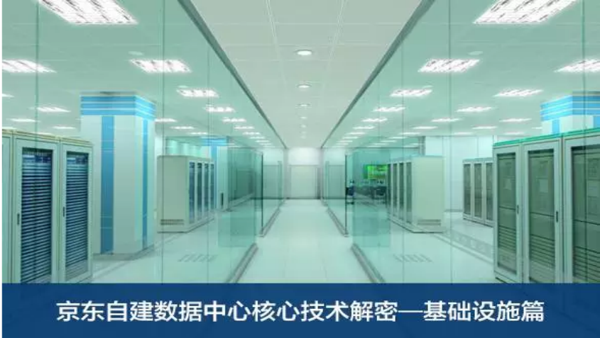

和百度李彦宏在山西阳泉建立数据中心一样，京东的第一个自建数据中心也建在刘强东的老家江苏宿迁。这个IDC被称为京东云华东数据中心，整体由4个模块和1栋综合大楼组成，总占地面积将近6万平方米，总投资30亿元。可以提供20万台的服务器安装和运营能力，存储能力不小于32EB，计算能力不小于128千万亿次每秒。


和百度李彦宏在山西阳泉建立数据中心一样，京东的第一个自建数据中心也建在刘强东的老家江苏宿迁。这个IDC被称为京东云华东数据中心，整体由4个模块和1栋综合大楼组成，总占地面积将近6万平方米，总投资30亿元。可以提供20万台的服务器安装和运营能力，存储能力不小于32EB，计算能力不小于128千万亿次每秒。
作为京东的标杆项目之一，京东CTO张晨曾多次在业界大会上讲到：“宿迁自建数据中心的绿色环保技术，贯穿整个生命周期。从最初的概念设计到施工建造，一直到投产后的运营管理，保证数据中心年均PUE≤1.3（实测），在华东地区达到领先水平。接下来我们将为大家揭秘京东自建数据中心的创新技术的神秘面纱。
随着数据中心需求和规模的不断扩大，建设成本和运行成本不可避免的会成为企业的考量指标。数据中心不仅耗电量巨大，耗冷量也不可小觑。据统计，数据中心空调系统的能耗一般占总能耗的20%-40%左右，其中制冷压缩机的能耗又占到空调系统总能耗的70%-90%。 降低空调制冷系统的能耗，将会是提高数据中心能源利用率最直接和有效的措施。因此，利用自然冷源来解决数据中心的散热问题，成为京东自建数据中心创新技术的核心考量之一。 京东自建数据中心选址在江苏宿迁地区，一年中大部分时间的温度在-5~35℃之间，水资源丰富，属于暖温带季风气候区。年均气温14.2℃，四季分明，初霜期一般在10月下旬。 相对于严寒地区，室外设备被冻结故障的可能性较小，而利用的室外自然冷源的条件又比较充足。 为了充分利用冬季室外天然冷源进行自然冷却，冷冻水系统设置了水-水不锈钢板式换热器，与冷水机组并联。 系统中设计冷冻水供水温度为10℃，实际运行中可以提高水温，来提高系统运行整体效率并延长自然冷却时间。 实际运行中，冷冻水系统在室外日平均温度持续5天以上低于10度时，切换到自然冷却系统使用，日平均温度持续5天以上高于10度时，开始退出。全年基本可以分为免费制冷季和常规制冷季。
京东IDC建设部技术专家黄轶彪谈到：“我们在传统的Freecooling技术基础上，增加了一套自主设计的气候环境采集控制系统，我们叫“平滑的连续调整”的Freecooling技术。 利用这套技术，完全实现了制冷系统根据室内外环境温度、湿度、系统负荷大小、平滑连续的调节各组件运行状态，始终保持系统在最佳的效率区间。而且全年可以“免费”使用自然冷源的时间高达180天以上，直接节约电费数百万元以上。”
制冷系统是数据中心的重要组成部分，担负着为数据中心提供可靠生产环境的任务。京东在宿迁的自建数据中心，采用三级压缩式冷水机组，结合水泵，冷塔变频控制带来很好的节能效果。 制冷设备采用4台水冷离心式冷水机组，3+1配备。压缩机形式为三级离心式，三级压缩具有转速低、运行平稳、低负荷工况好的特点，加大了机组制冷量的调节范围，同时，在三级压缩的过程中设置两级节能器，与不带经济器的冷水机组相比，相同制冷工况下节电量达到8-10%。 冷冻水系统的设计供回水温度为10~16℃，主要设备采用N+1冗余配备，保证系统不会由于某一设备故障而受到影响。整个水系统管路采用环状管路，设备之间设置双阀门，保障系统可用性。 并配备有在线式蓄冷罐，可以无间断的为系统提供15mins备用冷源。空调制冷系统的整体设计满足并高于Uptime Tier Ⅲ级别的要求。 空调制冷系统由冷源系统、管路系统、末端空调系统和辅助系统等构成，数据中心专门设置有制冷机房。
在京东宿迁自建数据中心的一期模块中，主机房内架空地板高度为1.2米。这种较高的架空层有利于空气静压的形成，使通风地板的出口风速平稳。 同时也为地下保温层和管线的维护提供了较大的空间。对于不同负荷的机柜，可调整通风地板的开孔面积分配冷量。机柜采用冷通道封闭的形式，使得空调送风冷却效率更高。 每个机房模块配有独立的直膨式新风机组，室外新风经初效和中效过滤，并经冷却处理后送入房间，保证机房正压需求。 主机房、变配电室、电池室、UPS配电室等均采用水冷式精密空调，采用N+1配置方式。 精密空调全部采用“UPS+市电”双路供电，UPS电源为主用，为避免大量空调同时启动对电网造成冲击，空调采取了延时策略。
京东IDC建设团队对所选用的精密空调，采用了具备节能设计的产品，包括： 空调EC风机叶轮采用航空级新型工程复合材料，质量更轻，强度更高，也更加节能； 通过控制器根据实际冷负荷按比例设定送风量，满足外部变化的冷负荷，降低风机消耗功率，进一步实现节能； 优化气流通道，扩大回风过滤器面积，减小内部压强，降低风机的功耗； 机组超大面积换热器，将风机模块安装在架空地板下，更好的利用机组的内部空间； 精密空调内置电极式加湿器，具有水处理系统，自动检测加湿罐中的杂质含量并清除，减少了氧化结垢现象。
京东在宿迁的自建数据中心，核心目标之一是全力保证负荷用电的高可靠性。 服务器电源是整个数据中心供配电系统建设的重点，了解服务器电源的相关特性对于数据中心的供配电系统建设具有重要的意义。 充分了解服务器电源的容量、冗余方式、制冷要求和能效设计等主要指标对于数据中心供配电系统的设计是十分必要的。 服务器冗余电源系统最终都可以归结到双电源系统上，如果双电源服务器的每一路电源都能通过独立的供电路由从独立的电源取电，就能够获得最高的可靠性。
建立京东专属的110KV开关站成为达成高可靠性这一目标的绝佳途径。110KV开关站紧邻京东宿迁自建数据中心园区，其上一级来自两个不同的220KV变电站专线。 在110KV开关站内设2台变压器，容量满足整个数据中心园区的最大用电量。当两台变压器任意一台检修或发生故障时，另一台完全满足园区内所有设备的正常用电需求。
机房内所有电子信息设备都采用UPS供电，其中两个生产机房和两个网络机房电子的供电模式为2N，其余六个生产机房的供电模式则为N+1。 辅助设备电源采用“UPS+市电”的供电模式，单台UPS后备蓄电池支撑时间不小于15分钟。当一路市电电源故障时，故障回路负荷自动切换给另一回路承担。 即使当两路市电电源都发生故障，机房模块内负荷由UPS蓄电池供电，同时备用柴油发电机组启动，向机房模块、空调冷源、照明等负荷供电。
如果市电发生断电，数据中心的发电系统会自动投入运行，与市电自动切换。并在限定时间内，由发电机组启动确保重要负载的紧急供电。 油罐储油量在无外部支援情况下满足发电机组大于12h带载连续运行，并有紧急供油协议作为后继可靠保障，任意一套油路系统PLC控制出现故障时，自动切换至另外一套PLC控制系统，保证系统供油的可靠性。当市电恢复，经过人工确认后，手动恢复市电供电。 京东在宿迁的自建数据中心，发电系统全部采用进口一线品牌的柴油发电机组设备，具有良好的启动性能。配有发动机缸套水加热装置，可以保证在低温时，系统的快速启动和带载能力。 机组可以承受负载突加75%的突发状况，保证发电机组快速启动后可以快速加载。对并机主控系统的冗余设计， 有效提高了并机系统的可靠性。发电机配置有防潮加热器，防止因空气湿度过高降低发电机绝缘性能而造成安全风险。

供储油系统在每个数据中心模块中独立设置，物理隔离。每个模块配置两个25立方埋地柴油储罐，每个柴油罐配置一用一备2台供油泵，两罐之间配置一台倒油泵。储罐区至机房日用油箱间输油管路为双环路设计，具备在线检修及容错能力。
在宿迁自建数据中心项目中，IDC建设团队选择采用了非晶合金变压器，它既有普通干式变压器阻燃自熄、防潮、耐裂的优良性能，又具有非常优异的导磁性能，去磁与被磁化的过程极易完成。 有利于降低损耗，增加有效载荷，提高效率。与普通干式变压器技术参数相比较，空载损耗下降65%-70%，节能效果非常显著。
京东在宿迁的自建数据中心，所有主机房都采用了分布式照明智能控制系统。人员进入机房时，系统会根据感应打开该部位的灯具，人员离开时灯具则按设定的延时时间自动关闭。无人员进入机房时灯具能满足运维监控的最低亮度，达到节能与自动控制的目的
京东IDC建设建设部负责人，首席技术专家张敬特别谈到了在京东宿迁自建数据中心二期的建设中，IDC建设团队引入的更多更前沿的实验性项目，包括：“通过6sigma做CFD气流仿真计算，了解IDC模块内的气流组织，温度分布情况，根据服务器的不同负荷状态，推算温度升高变化。” “通过建立数学模型推算和6sigma CFD系统的验证，在确保服务器同等负荷状态，以及满负荷状态，服务器的实际需求功耗不增加的前提下，逐步提高服务器的运行温度，也就是数据中心模块内的环境温度。”张敬还谈到：“于此同时，我们根据数学推算和CFD仿真验证的结果，将会在二期的实验模块里引入一些更节能的冷却技术。” 京东IT资源服务部负责人吕科认为：“数据中心行业是一个技术含量非常高的服务行业，它为企业大量的电子信息设备提供安全的场所、持续的电力、适宜的环境、稳定的网络以及专业的运维服务。” “这些表面看似简单的条件，背后却需要一个庞大复杂的综合系统来支撑。京东在人工智能，无人机，云计算等前沿科技领域，不断推出提升亿万用户购物体验的场景应用，正是基于我们持续技术创新的数据中心服务。” “数据中心在安全性和可靠性方面的不断提高，一直会为这些创新技术的落地推广、上线应用、稳定运行保驾护航。”